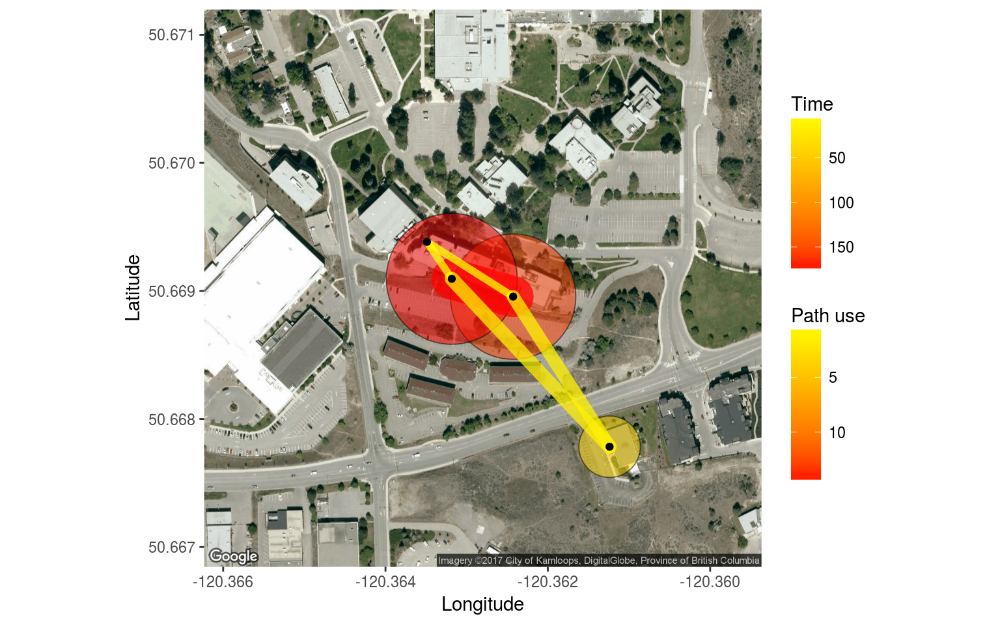
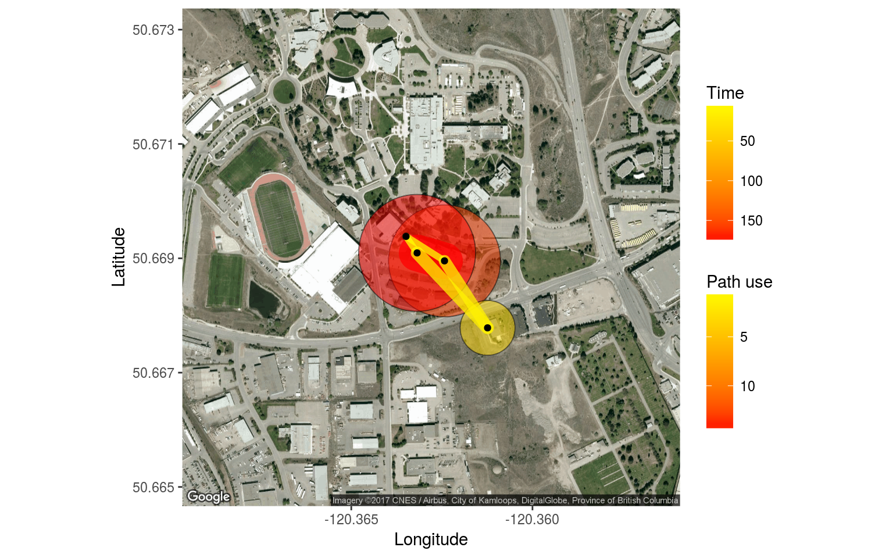
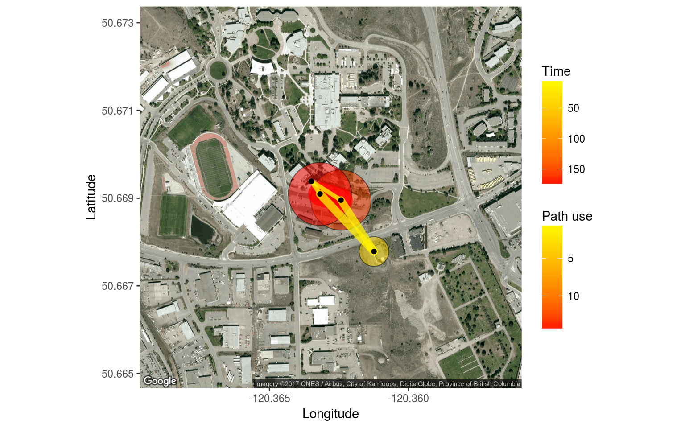
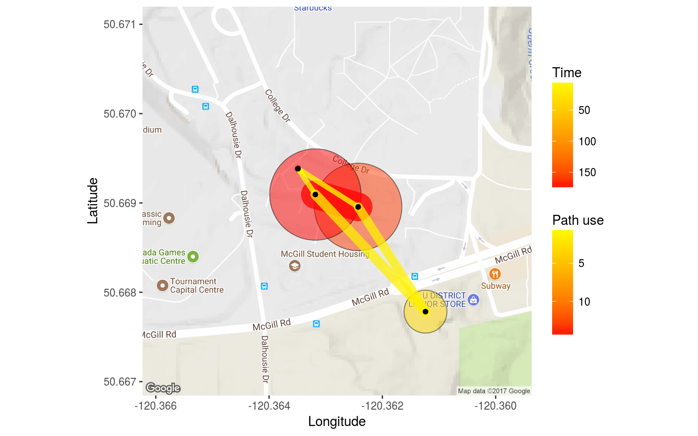
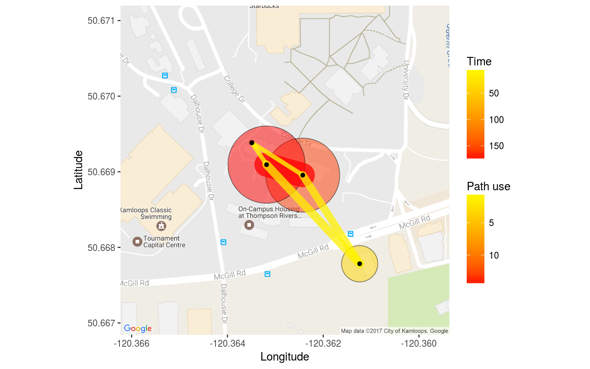
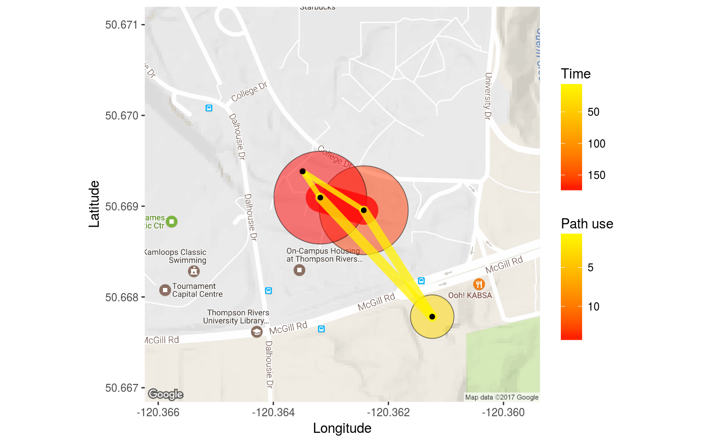
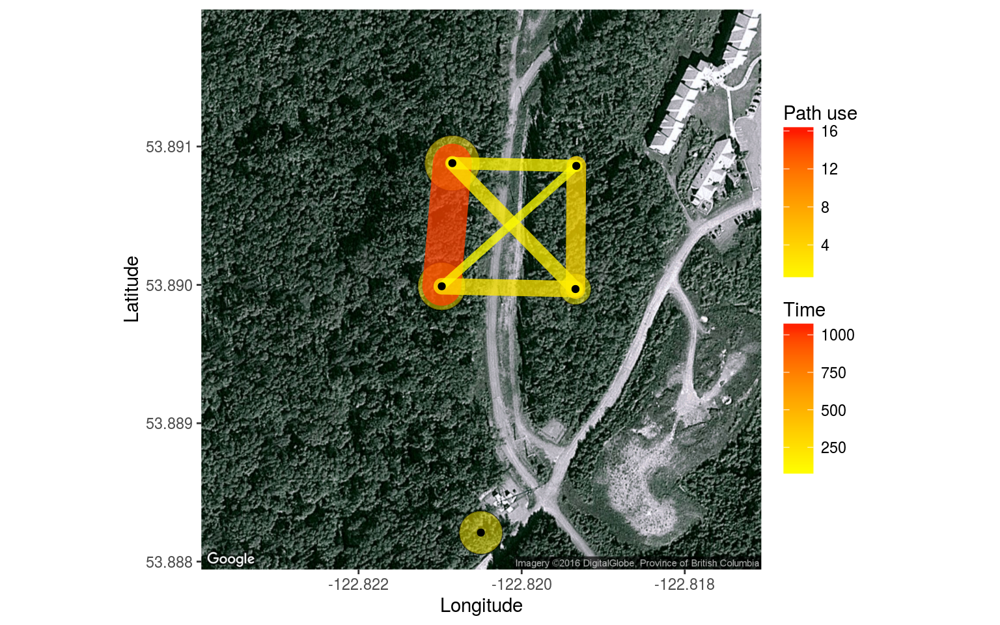

Here we will go over visualizing your data with maps. feedr includes two wrapper functions that can be used to visualize your data on maps. These two functions, map_leaflet and map_ggmap are really just convenience functions to do a lot of the grunt work. If you want to achieve a more fine tuned map, I suggest you check out the packages leaflet and ggmap.
map_leaflet and map_ggmap take summarized presence and movement data and turn it into circles and paths around/between loggers representing time spent at different loggers and the amount of movement between particular logger paths. Because different projects may need different summaries (totals vs. means, corrected for number of individuals, uncorrected, etc.) we will first go over how to create the summary data and then pass this to the functions for plotting. This gives us more flexibility, but does mean that we have to do some work before we can visualize the data.
feedr also includes a stand-alone shiny app (launched with ui_animate()) that can be used to create simple animations of your data, this is a simple process as it does not require summarized data, but is also less flexible (see animations below).
Let’s start by calculating presence and movements:
v <- visits(finches_lg)
p <- presence(v)
m <- move(v)There are many ways we can summarize the data. The following options are available through the summary argument of the mapping functions:
map_leaflet()This function creates an interactive html map using leaflet for R (package leaflet).
map_leaflet(p = p, m = m, summary = "sum_indiv")The map is interactive in that it can be zoomed, the tiles changed, and different elements added or removed. loggers (white-outlined black dots) can also be clicked on to reveal ids and circles and paths can clicked on to reveal their actual numbers.
You can also adjust some of the cosmetic details:
map_leaflet(p = p, m = m, summary = "sum_indiv",
p_scale = 0.5, m_scale = 0.5,
p_title = "Presence (min)", m_title = "Paths (Total use)",
p_pal = c("blue","white"), m_pal = c("black","red"))To plot by individual, simply use individual summaries:
map_leaflet(p = p, m = m, summary = "indiv")Note, however, that for leaflet maps, the individual lines are stacked in order of magnitude and visualizations like this may not be very useful for large numbers of individuals.
To save this map, you can zoom and set it up as you like and use the “Export > Save as image” button in RStudio.
Alternatively, you can use the map_ggmap() function to visualize a static map.
| Back to top |
map_ggmap()This creates static maps using the package ggmap. This map may take longer to create as it downloads background images from Google Maps (but you can also specify the source, see below).
map_ggmap(p = p, m = m, summary = "sum_indiv")## Map from URL : http://maps.googleapis.com/maps/api/staticmap?center=50.669025,-120.362806&zoom=17&size=640x640&scale=2&maptype=satellite&language=en-EN&sensor=false
Getting the zoom level often requires some trial and error (default = 17). If you see a warning about rows with missing values omitted, this means that not all your data could fit on the map, consider using a different zoom:
map_ggmap(p = p, m = m, summary = "sum_indiv", zoom = 16)## Map from URL : http://maps.googleapis.com/maps/api/staticmap?center=50.669025,-120.362806&zoom=16&size=640x640&scale=2&maptype=satellite&language=en-EN&sensor=false
map_ggmap(p = p, m = m, summary = "sum_indiv",
zoom = 16, p_scale = 0.7)## Map from URL : http://maps.googleapis.com/maps/api/staticmap?center=50.669025,-120.362806&zoom=16&size=640x640&scale=2&maptype=satellite&language=en-EN&sensor=false
We can adjust the map type:
map_ggmap(p = p, m = m, summary = "sum_indiv", maptype = "terrain")## Map from URL : http://maps.googleapis.com/maps/api/staticmap?center=50.669025,-120.362806&zoom=17&size=640x640&scale=2&maptype=terrain&language=en-EN&sensor=false
map_ggmap(p = p, m = m, summary = "sum_indiv", maptype = "roadmap")## Map from URL : http://maps.googleapis.com/maps/api/staticmap?center=50.669025,-120.362806&zoom=17&size=640x640&scale=2&maptype=roadmap&language=en-EN&sensor=false
For individuals:
map_ggmap(p = p, m = m, summary = "indiv")## Error in map_ggmap(p = p, m = m, summary = "indiv"): You have chosen to run this function on more than 10 animals. This may overload your system. We recommend trying again using the 'which' argument to specify a subset of animals.Okay, let’s try with fewer individuals
map_ggmap(p = p, m = m, summary = "indiv",
which = c("041868E9A8", "06200003AA"))## Map from URL : http://maps.googleapis.com/maps/api/staticmap?center=50.669025,-120.362806&zoom=17&size=640x640&scale=2&maptype=satellite&language=en-EN&sensor=false## You have specified multiple animals and static maps, this means that an individual map will be drawn for each animal. This may take some time to display in the plots window.
Let’s look at all the birds for which we have movements
ids <- unique(m$animal_id)
map_ggmap(p = p, m = m, summary = "indiv",
which = ids)## Map from URL : http://maps.googleapis.com/maps/api/staticmap?center=50.669025,-120.362806&zoom=17&size=640x640&scale=2&maptype=satellite&language=en-EN&sensor=false## You have specified multiple animals and static maps, this means that an individual map will be drawn for each animal. This may take some time to display in the plots window.
Calculate total time present at each logger, corrected for the number of individuals total
p_pop <- p %>%
group_by(logger_id) %>%
summarize(amount = sum(length) / animal_n[1])
p_pop## # A tibble: 4 x 2
## logger_id amount
## <fctr> <time>
## 1 2100 159.4181818 mins
## 2 2200 37.2318182 mins
## 3 2400 0.1848485 mins
## 4 2700 174.1136364 minsWe use animal_n[1] because we want to divide the total sum by the number of individuals in each experiment. However, the value animal_n is repeated, but we only need the first one, hence the [1].
If we wanted to calculate mean time present, we would use amount = mean(length)
If we wanted to calculate total time presence with no correction, we would use amount = sum(length)
Note: The new summary data set must have the column amount, regardless of how it is calculated. The mapping functions will look for that column name.
Now let’s summarize the movement data for each movement path between loggers. We can summarize individually for each logger, which will account for the double counting (one row for leaving the logger and one row for arriving) as well as making sure we have logger_id in the final data set. We will also group by lat and lon, so they remain in the data set (because they are associated with logger_id they do not contribute any unique grouping combinations).
m_pop <- m %>%
group_by(logger_id, move_path, lat, lon) %>%
summarize(path_use = length(move_path) / animal_n[1])
m_pop## # A tibble: 10 x 5
## # Groups: logger_id, move_path, lat [?]
## logger_id move_path lat lon path_use
## <fctr> <fctr> <dbl> <dbl> <dbl>
## 1 2100 2100_2200 50.66896 -120.3624 1.09090909
## 2 2100 2100_2400 50.66896 -120.3624 0.09090909
## 3 2100 2100_2700 50.66896 -120.3624 14.45454545
## 4 2200 2100_2200 50.66778 -120.3612 1.09090909
## 5 2200 2200_2700 50.66778 -120.3612 1.36363636
## 6 2400 2100_2400 50.66938 -120.3635 0.09090909
## 7 2400 2400_2700 50.66938 -120.3635 0.09090909
## 8 2700 2100_2700 50.66909 -120.3632 14.45454545
## 9 2700 2200_2700 50.66909 -120.3632 1.36363636
## 10 2700 2400_2700 50.66909 -120.3632 0.09090909Note: The new summary data set must have the column path_use, regardless of how it is calculated. The mapping functions will look for that column name.
Specify summary = none when the data is already summarized:
map_leaflet(p = p_pop, m = m_pop, summary = "none")We can also summarize data by individual for plotting of individual maps.
This is virtually identical to what we did above, except that we add one more variable to group by and we don’t correct for the number of individuals:
p_indiv <- p %>%
group_by(animal_id, logger_id) %>%
summarize(amount = sum(length))
p_indiv## # A tibble: 23 x 3
## # Groups: animal_id [?]
## animal_id logger_id amount
## <fctr> <fctr> <time>
## 1 041868E9A8 2100 2.01666667 mins
## 2 041868E9A8 2200 189.96666667 mins
## 3 041868E9A8 2700 14.51666667 mins
## 4 041869123C 2200 23.85000000 mins
## 5 06200003AA 2100 23.16666667 mins
## 6 06200003AA 2700 311.95000000 mins
## 7 0620000400 2100 7.76666667 mins
## 8 0620000400 2700 24.83333333 mins
## 9 062000043E 2700 0.03333333 mins
## 10 0620000477 2100 14.35000000 mins
## # ... with 13 more rowsm_indiv <- m %>%
group_by(animal_id, move_path, logger_id, lat, lon) %>%
summarize(path_use = length(move_path))
m_indiv## # A tibble: 32 x 6
## # Groups: animal_id, move_path, logger_id, lat [?]
## animal_id move_path logger_id lat lon path_use
## <fctr> <fctr> <fctr> <dbl> <dbl> <int>
## 1 041868E9A8 2100_2700 2100 50.66896 -120.3624 1
## 2 041868E9A8 2100_2700 2700 50.66909 -120.3632 1
## 3 041868E9A8 2200_2700 2200 50.66778 -120.3612 3
## 4 041868E9A8 2200_2700 2700 50.66909 -120.3632 3
## 5 06200003AA 2100_2700 2100 50.66896 -120.3624 6
## 6 06200003AA 2100_2700 2700 50.66909 -120.3632 6
## 7 0620000400 2100_2700 2100 50.66896 -120.3624 3
## 8 0620000400 2100_2700 2700 50.66909 -120.3632 3
## 9 0620000477 2100_2700 2100 50.66896 -120.3624 8
## 10 0620000477 2100_2700 2700 50.66909 -120.3632 8
## # ... with 22 more rowsTo create maps you need to define a summary OR create custom summaries with the following:
logger_id and amountlogger_id, move_path, path_use, lat, and lonIf you want to look at individual data, add animal_id to the groupings.
To look at animations of your data overtime, you can use the function ui_animate() to launch the animation shiny app included in the feedr package:
ui_animate(v)Here you can choose
The figure along the bottom shows the number of movements and/or bouts of presence over time. This can help you chose which time frames to include.
Back to top
Go back to home | Go back to transformations